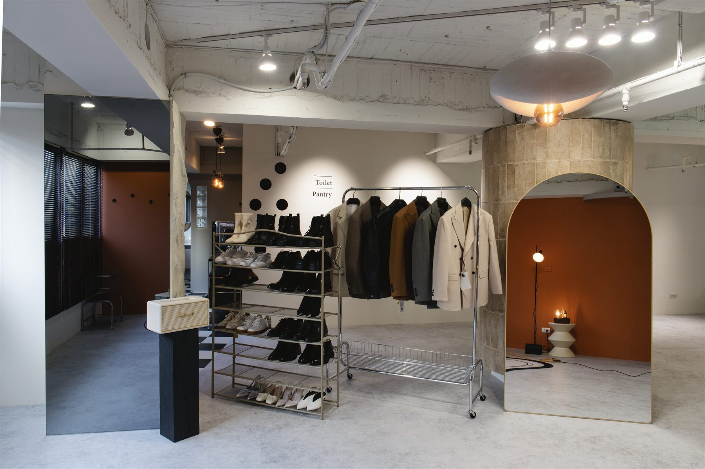

完整的視覺語言策略。可選單項，也可組合。
深度對談與視覺分析，釐清個人風格基底——氣質、體型、色彩、情境。
依診斷結果建立風格座標，產出長期可用的指南——場合、配色、單品建議。
到府或工作室盤點衣物，篩出留下、調整、補齊的單品。衣櫃即形象的延伸。
實體或線上採購陪同。依風格與場合精準選品——不是買得多，是買得對。
為企業建立員工形象指引、服裝規範與形象訓練。案例計價（P038）。
婚禮、重要場合、轉職、自媒體——針對特殊節點的形象升級。
透過 LINE 或表單留言。諮詢團隊於工作日盡快回覆，安排首次面談。
工作室深度對談、體型分析、色彩判定，了解生活情境與場合需求。
整理出個人風格指南——場合、配色、單品方向、避雷清單。
依方案進入衣櫃整理、選購陪同，或銜接 B Room、C Photos。
服務後提供 LINE 問答支援，協助將風格內化成日常。支援期間依方案約定。
À Voir 不是給「想變美」的服務──是給理解「形象等於語言」的客戶。
給那些明白形象先於話語的人。
不需要。第一次諮詢只需帶上您自己。我們會請您填寫簡短問卷，於見面前建立基礎輪廓。
視衣物量而定。一般於工作室進行（攜帶代表性單品），衣物多者安排到府。
不會。À Voir 為純諮詢服務，不收取品牌佣金。建議基於客戶需求與預算。
可以。À Voir 是獨立服務。但若打算拍攝，整合服務的成果會更貼合。
Begin with understanding.
形象旅程從一場 À Voir 諮詢開始。先理解您，再決定下一步。